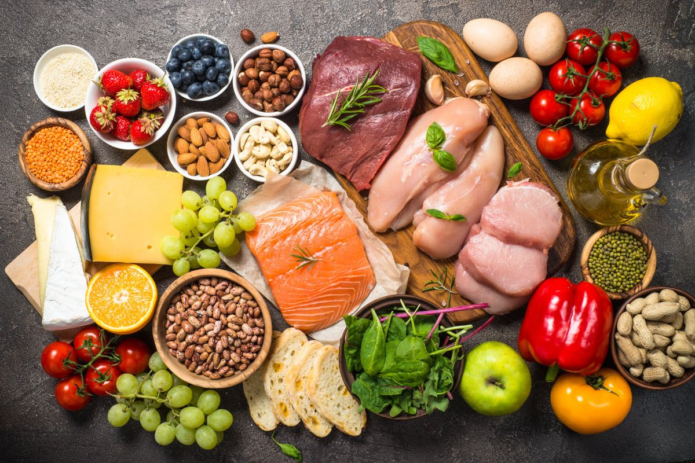
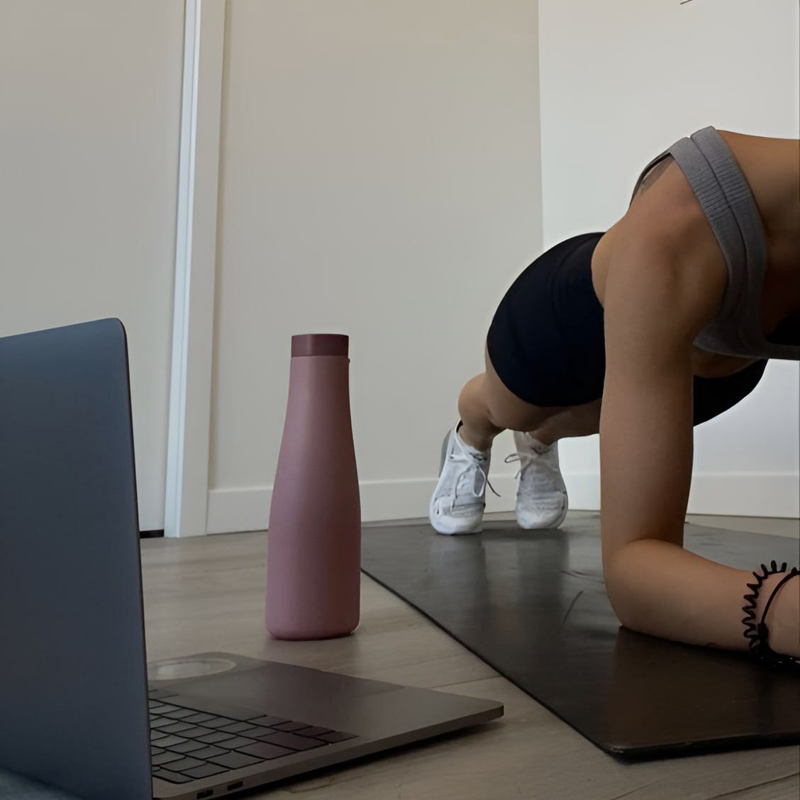
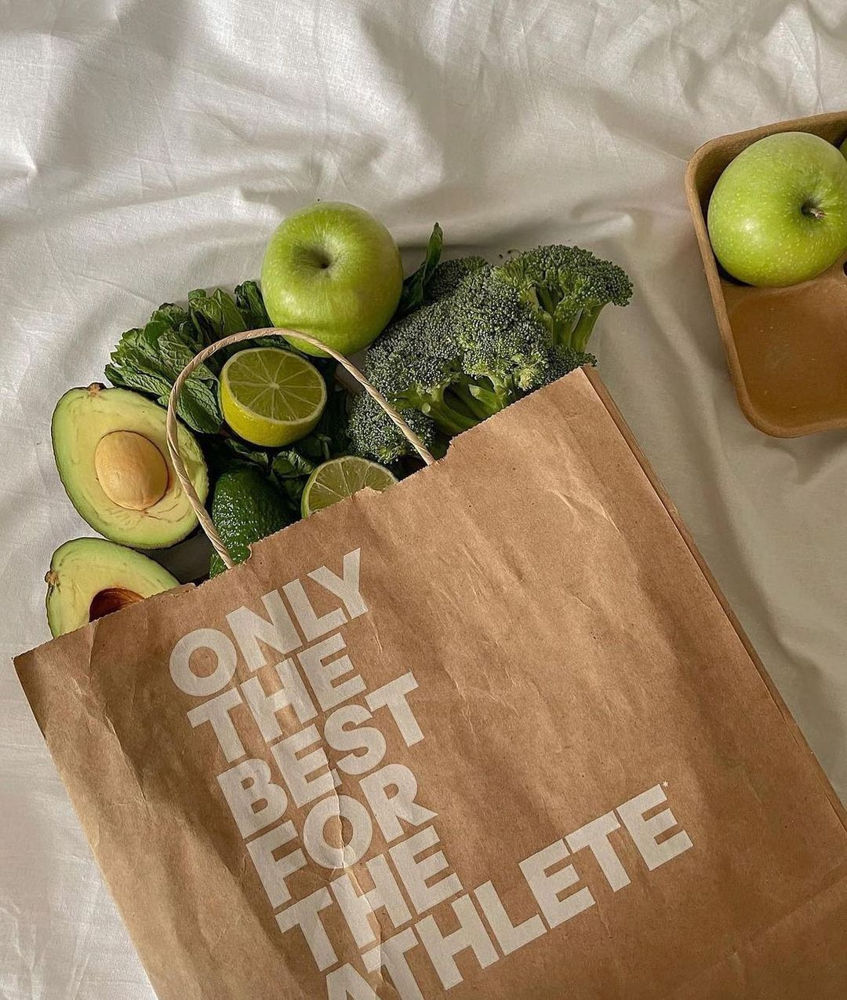
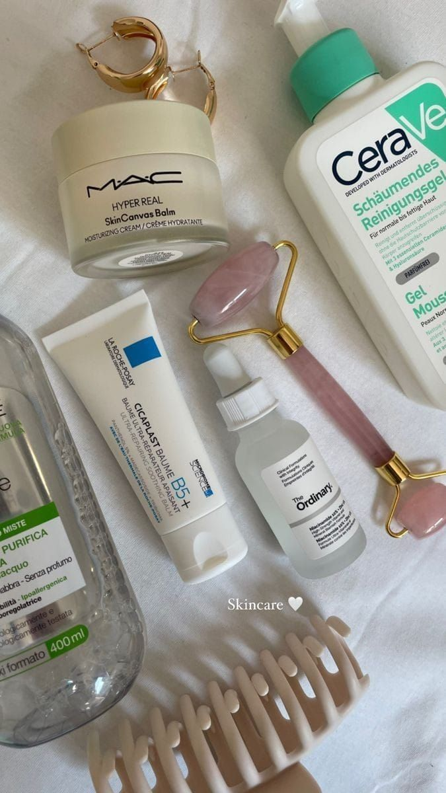
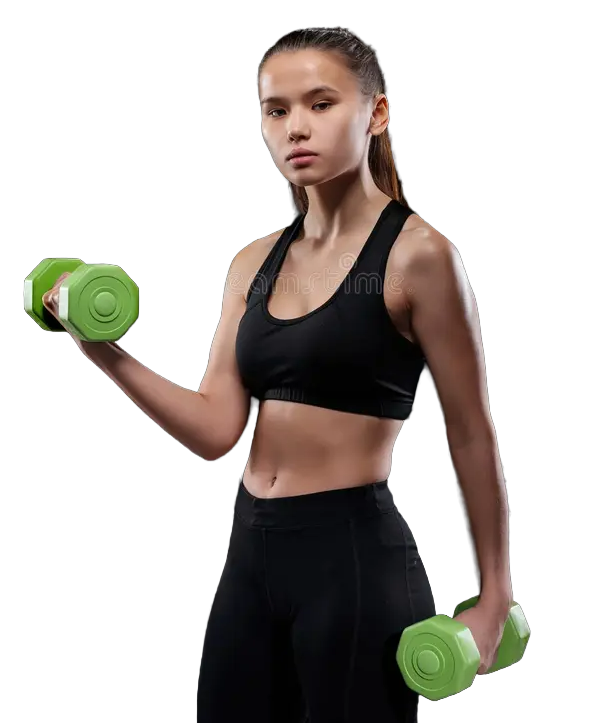
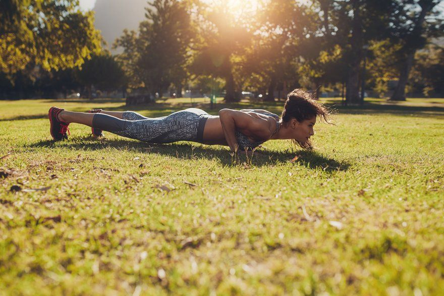
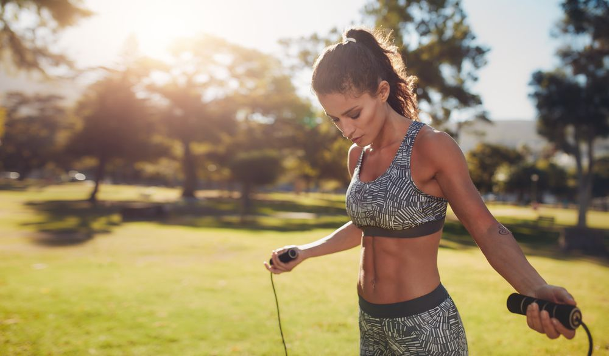
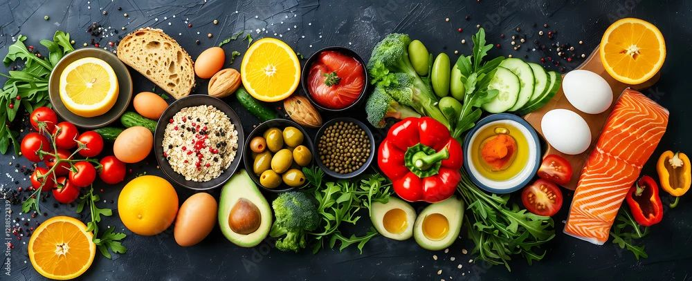

Ваш личный дневник здоровья
Наш дневник станет вашим надежным помошником на пути к долголетию, и отличному самочувствию каждый день

Полезные рецепты
Простые и вкусные блюда, проверенные диетологами, для вашего рациона.

Лучшие тренировки
Эффективные упражнения для любого уровня подготовки и личных предпочтений.

Советы нутрициолога
Научитесь правильно и сбалансированно питаться, поддерживая своё здоровье.

Уход за кожей
Советы по уходу за любым типом кожи для сохранения красоты и молодости.
Успех — не случайность.
В этом разделе вы найдете советы и рекомендации о том, как соблюдать здоровый̆ образ жизни, правильно и разнообразно питаться, какие физические упражнения делать ежедневно и от каких вредных привычек стоит избавиться.
Начать
Формула успеха
Спорт — это не только игра, соревнование или физическая активность, но и мощный язык, на котором говорят характер, воля и мечта. Этот диалог начинается за пределами стадионов — в утреннем подъёме, преодолении усталости, тихих уговорах, когда хочется всё бросить. Именно здесь, на этой невидимой арене, и рождается настоящая победа.


Энергия достижений
Я промахнулся более 9000 раз за карьеру. Проиграл почти 300 матчей. 26 раз мне доверяли победный бросок — и я промахивался. Я терпел неудачи снова и снова. Именно поэтому я преуспел.
Майкл Джордан, баскетболист
Основные правила здорового сбалансированного питания:
Используйте «метод тарелки»
Рацион питания должен на ½ состоять из овощей и фруктов, ¼ отводится на «полезные углеводы», как правило, гарниры, и еще ¼ - на белковые продукты (мясо, рыба).
Используйте в питании сложные углеводы
Углеводы — основной источник энергии для всех клеток нашего организма. Однако важно помнить, что углеводы бывают разными. Простые углеводы быстро всасываются и практически никогда не могут быть сразу целиком использованы организмом для воспроизведения энергии. Сложные углеводы, напротив, дольше утилизируются, что дает нашему телу возможность использовать их как энергию в течение длительного времени без риска их отложения в виде жира.Обращайте снимание на «скрытые» жиры при приготовлении блюд.
Обращайте снимание на «скрытые» жиры при приготовлении блюд.
Полезные углеводы зачастую при приготовлении становятся калорийными за счет добавления масла, соусов, сыра и т. д. Ешьте больше фруктов и овощей В еде можно использовать свежие, замороженные, консервированные или сухие фрукты и овощи. Взрослым людям рекомендуется включать в рацион 5 порций овощей или фруктов в день (примерно 400 граммов). Не забывайте про рыбу и морепродукты Рыба является прекрасным источником белка, витаминов и минералов.
Жиры, так же как и остальные группы питательных элементов, необходимы человеческому организму для нормального функционирования. Однако важно помнить, что, как и с углеводами, существуют «полезные» и «вредные» жиры. «Вредные» (насыщенные) жиры вызывают повышение уровня холестерина, и при их избыточном употреблении может развиться атеросклероз. Насыщенные жиры в большом количестве содержатся в сливочном масле, жирном мясе, сосисках, колбасах, сырах, жирных молочных продуктах (сметане, сливках), выпечке и т. д. Суточная порция насыщенных жиров не должна превышать 30 г у взрослого мужчины и 20 г у взрослой женщины. Постарайтесь заменять насыщенные жиры ненасыщенными, которые содержатся в растительных маслах, авокадо, рыбе и др.
Ограничьте употребление сахара в пище
Избыточное потребление сахаров приводит к развитию ожирения, а также повреждению зубной эмали. Сладкие напитки и продукты, как правило, высококалорийны и при избыточном употреблении приводят к быстрому набору веса. Большинство готовых продуктов содержат неожиданно большое количество сахара. В особенности это касается сладких газированных напитков, пакетированных соков с добавлением сахара, алкогольных напитков, выпечки, сладких йогуртов и, конечно, конфет и шоколада. Высоким считается содержание сахара более 22,5 г в 100 г продукта.
Ешьте меньше соли
Взрослому человеку рекомендовано употреблять не более 5 г соли в день. Избыточное ее потребление приводит к развитию повышенного артериального давления и гипертонической болезни. Готовые пакетированные продукты зачастую содержат крайне высокое содержание соли. Обращайте внимание на маркировку на продуктах. Чтобы не терять вкусовые качества блюд, соль можно заменять различными продуктами, например, добавлять в салат морскую капусту или лимонный сок, использовать при приготовлении больше зелени и пряностей или сушеных овощей.

Научитесь интерпретировать состав в готовых продуктах
В современном мире мы часто едим готовые продукты. Чтобы правильно посчитать количество потребляемых калорий и иных компонентов, важно обращать внимание на состав и взять за привычку смотреть на ингредиенты продуктов на упаковках.
Не забывайте про воду
Людям необходимо потреблять много жидкости, чтобы избежать обезвоживания. Рекомендуется пить не менее 6–8 стаканов (1,5–2 л) в сутки в дополнение к той жидкости, которую вы получаете из еды. Любые безалкогольные напитки учитываются, однако, стоит отдавать предпочтение воде и напиткам с низким содержанием сахара (чай, кофе). Важно помнить, что потребность в жидкости возрастает в жару и при физической активности.
Не пропускайте завтрак
Многие люди не завтракают, так как думают, что это помогает им сбросить вес. В реальности дела обстоят ровно наоборот. Завтрак с высоким содержанием клетчатки и низким содержанием сахаров и жиров является здоровым и полезным и позволяет не перекусывать вредной пищей в течение дня.
Формируйте правильные пищевые привычки
Мы живем в эпоху, когда еда из жизненно необходимого источника энергии, витаминов и минералов превратилась в антидепрессант, средство от скуки и способ коммуникации. Многие люди переедают не из-за неправильного состава пищи, а из-за нецелесообразного ее приема. Старайтесь не есть на ходу и не совмещать прием пищи с другими активностями (просмотром телевизора или видео в интернете, перепиской в смартфоне, чтением книг, работой и т. д.). Не покупайте и не готовьте избыточное количество продуктов.